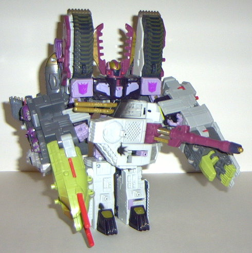

Ramjet
Ramjet
Allegiance : Minicon
Size : Mini-Con
Difficulty of Transformation : Very Easy
Color Scheme : Light red, light gray, purple, and some dull gold
Rating : 3.0
Ramjet
Allegiance
: Minicon
Size
: Mini-Con
Difficulty of Transformation
: Very
Easy
Color Scheme
: Light red, light gray,
purple, and some dull gold
Rating
: 3.0
Vehicle mode is a jet.
It becomes apparent when you see this guy that he's really tiny, even for
a Minicon- in fact, I think he's tiniest Minicon there is. Anyways, this
mode itself is pretty nice. Very nice proportions and mold detailing, and
although there's little paint detailing, Ramjet is small enough and has
enough variance in his color scheme where he really doesn't need much.
His robot arms stick out a bit on the bottom, although they're mostly covered
up by the wings. Other than that, no real beefs about this mode. His Minicon
symbol is on his left wing, and his Minicon port is on the underside of
this mode, slightly to the rear of center.
In robot mode, Ramjet
looks like a bad G1 toy. Ick. Although the mold detailing is pretty nice,
everything else about this mode stinks. For one, his proportions are horrible-
his legs are too skinny, he looks too stiff, and his arms bend at an odd
angle. Secondly, he only has one leg! Granted, there's a line down the
center to give it the slight appearance that it's two separate legs, but
it's still just a unileg. Double ick. Also, he has pretty bad articulation-
he can move at the elbows, and his unileg can move at the hip and knee,
but all that accomplishes is making him look like he has to hop around
like a rabbit to get anywhere. Triple ick.
Ramjet's tiny vehicle
mode is pretty nice, but his robot mode is horrible. Nothing spectacular
about this guy at all.
 Tidal
Wave
Tidal
Wave
Allegiance
: Decepticon
Size
: Giga-Con
Difficulty of Transformation
: Easy
Color Scheme
: Dark gray, light gray,
dull gold, purple, pea green, light red, and some shiny black, silver,
gunmetal silver, and brown
Powerlinx ports
: 10 (1 gimmicked)
Rating
: 9.4
Tidal Wave is a unique
transformer, that's for sure. For starters, his "vehicle mode" consists
of THREE individual ships. No, they don't have individual robot modes-
otherwise they'd be seperate characters. As a whole, the three ships are
called the "Dark Fleet" on the packaging. I'll review then one at a time.
The first ship, which
I'll call "Arsenal", packs all of the firepower, and most of the gimmicks
on Tidal Wave. It's a rather odd shape- in fact, I'm not sure if there's
a real-life counterpart to this ship- but it's functional. The two green
projections in the front have missile-firing triggers- although I do wish
that they'd get rid of that puke green, it really doesn't fit in with the
otherwise-nice color scheme at all. Arsenal also has Tidal Wave's only
Minicon-activated gimmick- the port near the rear of the ship can move
the four turrets to the side of it if you attach a Minicon to it and move
it back and forth. Pretty nice. (Oddly enough, Tidal Wave has no electronics
at all, unlike
Megatron
/
Galvatron
and
Jetfire
. Of course, he is noticeably bigger,
so that is obviously where the money went. Can't say I miss the electronics,
really...)
The second ship is the
largest, and I'll call it "Brunt", since it looks like it could take a
ton of damage, being all big and thick as it is. It's also a type of ship
I've never seen before, although that doesn't necessarily mean that it
doesn't exist, of course. The purple parts in the front are obviously feet,
but otherwise there aren't any extras. Brunt has no Minicon gimmicks, although
he does have four ports. However, if you open up the top half, there's
four Minicon-sized foldout seats under them! Ingenious! I really like this
idea.
The last ship is an
aircraft carrier, and I'll call it "Takeoff". Although it's still easily
recognizable as a carrier, it's probably the ship that is most obviously
part of a robot. The hands stick out rather obviously on the front, and
there's small arm "bits" that stick out of the back. From a side view,
the carrier is also a bit taller than it should be, and becomes especially
apparent that this carrier is actually just Tidal Wave's hands with a "carrier
platform" on the top. Takeoff has three more Minicon ports, as well as
a moving "elevator" of sorts that can storm Ramjet near the rear.
You can combine Arsenal,
Brunt, and Takeoff to form Tidal Wave's complete vehicle mode. It's a pretty
nondescript thing- kind of like some huge futursitic battleship- but it
looks pretty cool. The ships fit together almost seamlessly, and STAY together
(although the front half does tend to droop down a bit if you hold Tidal
Wave up by one hand, since he is pretty long). It also becomes apparent
when you put the three ships together just how varied Tidal Wave's color
scheme is- his paint and mold detailing is awesome! Plus, with a bunch
of Minicons on him (see above picture), Tidal Wave truly becomes a formidable
force in this mode.

Tidal Wave's robot mode
is huggin' awesome. Excellent paint and mold detailing as before, but it
also becomes appparent just how HUGE Tidal Wave is for his size category.
Just to show you, the two pics above are pretty much to scale with one
another- and yet both Galvatron and Tidal Wave are in the same size category!
Tidal Wave is one bad motha'.... okay, I'll shut my mouth. Anyways, Tidal
Wave's overall "look" is very imposing, although that puke green does interfere
with that vibe a little. Once you transform Tidal Wave once, though, it
becomes apparent that you can't keep his missiles in their ports in this
mode- they fire out because the triggers are pressed into another part!
This was something that shouldn't have been overlooked in my opinion, as
there's nowhere else you can put the missiles. Drag. Tidal Wave's articulation
is decent- he can move at the shoulders (two points), the elbows (two points),
his waist, his hips (two pints), and his fingers (as a whole) and thumb
can move as well. However, he has no knees- which I think is a bit inexcusable
for such a large figure. Luckily, Tidal Wave is so awesome in other areas
that this is easily overlooked.
Tidal Wave can also
combine with Armada Megatron or Galvatron to form "armor" or sorts for
them. There's basically two different sides to this; first off, you can
look at Galvatron/Megatron like he's really beefed up and brimming with
firepower (because, well, he is). However, Tidal Wave is so LARGE compared
to Megatron/Galvatron that the latter's joints can't take the stress of
the added parts. Thus, the elbow joints will usually flop downwards after
you put the arm pieces on, which is kind of a drag.
Tidal Wave is an excellent
and extremely inventive and orignal toy, with only a few minor flaws. (Namely,
his combined mode with Galvatron, his inability to move at the knees, and
a few other mentioned small quirks.) Highly recommended.
No Stats
Review by Beastbot